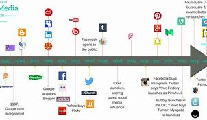
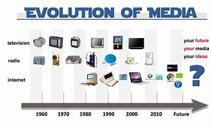
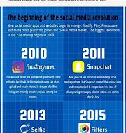
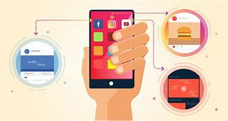

The evolution of social media has profoundly reshaped the way we communicate, share information, and connect with others on a global scale. Starting as simple online platforms for friends to stay in touch, social media has evolved into complex ecosystems that influence everything from politics to personal branding. This essay explores the transformative journey of social media, from its humble beginnings to its present impact on society.
In the early 2000s, platforms like Friendster, MySpace, and later Facebook pioneered the concept of connecting with friends and sharing updates online. These platforms laid the foundation for the social media revolution, enabling users to create profiles, share photos, and communicate with their network. As the years went on, new platforms emerged, each with a unique focus � Twitter for microblogging, Instagram for visual sharing, and LinkedIn for professional networking.
The rise of smartphones further accelerated the adoption of social media. With easy access to these platforms through mobile apps, people could connect and engage in real time from anywhere. This marked a turning point in how news spread, as events could be documented and shared by individuals on the ground, challenging traditional media's monopoly on information dissemination.
Social media's impact on society extends beyond personal connections. It has become a powerful tool for activism, sparking movements like the Arab Spring and Black Lives Matter. Additionally, it has reshaped marketing and branding strategies, with influencers and businesses leveraging platforms to reach massive audiences directly. However, this influence isn't without its downsides, as the spread of misinformation and the erosion of privacy have become critical issues.
In conclusion, the evolution of social media has been a remarkable journey that has connected the world in unprecedented ways. From its origins as a means to stay in touch with friends to its current role as a driver of social change and business success, social media's impact on society is profound. As it continues to evolve, addressing its challenges while harnessing its potential for positive impact will be key to shaping its future trajectory.
